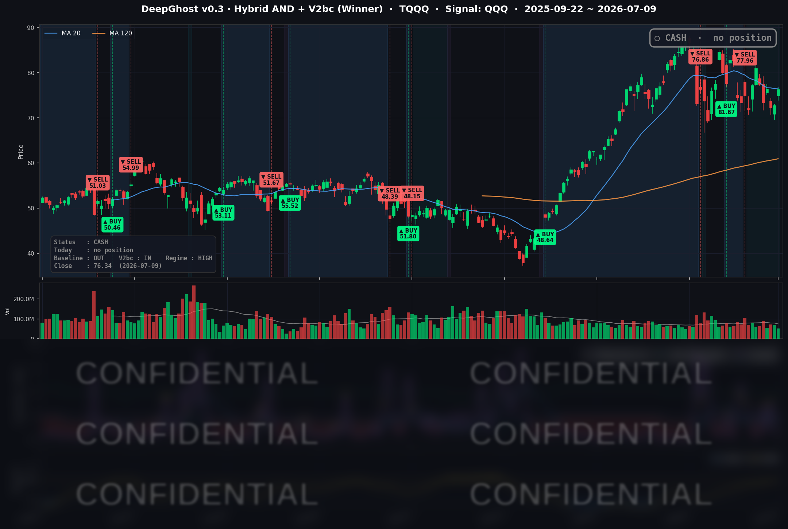

👻 매일 시그널과 히스토리를 홈페이지에서 한눈에 → www.ghostai.co.kr
하아닉스 ADR 공모가 성공적이라는 소식이 반도체 주식들을 끌어올렸습니다. 반도체만 오르는 비정상적인 시장입니다. 어떤 악재로 다시 하락할지 아무도 모릅니다.
그만큼 약한 시장이라는 말이고 이럴때는 한발 물러나 관망하는게 좋습니다.
📊 오늘의 매매 신호
| 항목 | 내용 |
|---|---|
| 오늘 할 일 | ✅ 아무것도 안 해도 됩니다 |
| 포지션 상태 | 💵 현금 보유 중 (OUT OF POSITION) |
| 현금 보유 기간 | 2026-06-25 ~ 2026-07-09 (14일) |
| TQQQ 종가 | $76.34 (+4.98%) |
하이닉스 ADR로 인하여 나스닥이 상승하였습니다.
TQQQ 시그널 — OUT OF POSITION
현재 상태: 현금 보유 중 | 6/25 매도 이후 관망 지속

오늘 나스닥이 크게 오르면서(QQQ +1.66%, TQQQ +4.98%) "이제 들어가야 하나" 싶은 하루였습니다. 하지만 모델의 레버리지 나스닥(TQQQ) 트랙은 여전히 현금 상태를 유지했습니다.
가장 큰 이유는 모델이 중요하게 보는 횡보 인덱스 입니다. 오늘은 진입 신호 쪽은 사자는 방향으로 뚜렷하게 기울었지만, 횡보 필터가 경계 구간(HIGH)에 정확히 도달하면서 모든 걸 청산하라는 신호를 출력했습니다.
오늘 주식을 보유 중이었다면 청산 신호가 나왔을 것입니다. 그만큼 방향성없이 흘러가는 시장이라는 의미이며, 한동안 매수 시그널을 보기 어려울 것으로 추정합니다.
시간 조정을 충분히 거치고 다시 상승 추세가 올때가지 기다리는 것이 이 전략의 의도입니다.
오늘 미국 시장 — 시황 요약
지수 마감
| 지수 | 종가 | 등락률 |
|---|---|---|
| S&P 500 | 7,543.64 | +0.81% |
| Nasdaq Composite | 26,206.89 | +1.30% |
| Dow Jones | 52,487.41 | +0.27% |
| Russell 2000 | 2,992.54 | +1.22% |
나스닥(+1.30%)이 다우(+0.27%)를 크게 앞선 전형적인 성장주 우위 랠리였습니다. 대형 기술주만 오른 것이 아니라 소형주(러셀 2000 +1.22%)까지 함께 올라 상승의 폭이 넓은, 겉보기엔 건강한 상승세였습니다. QQQ +1.66%가 3배로 증폭돼 TQQQ는 +4.98%를 기록했습니다.
국채 금리 동향
| 만기 | 수익률 | 전일 대비 |
|---|---|---|
| 3개월 | 3.682% | -4.1bp |
| 5년 | 4.269% | -3.9bp |
| 10년 | 4.539% | -3.0bp |
| 30년 | 5.053% | -1.2bp |
금리는 만기 전 구간에서 소폭 내렸고, 특히 단기물이 더 크게 하락했습니다. 유가 급락으로 인플레이션 부담이 줄어든 것이 금리 하락으로 이어졌고, 이는 밸류에이션에 민감한 성장주·반도체에 순풍이 됐습니다. 장단기 금리는 정상 우상향(10년-3개월 +85.7bp)을 유지해 침체를 알리는 역전 신호는 없습니다. 다만 오늘의 하락은 국지적 되돌림 성격이 강해, 추세적 완화로 보기는 아직 이릅니다.
연준 발언 & 금리 패스
전날 공개된 6월 FOMC 의사록의 여파가 이날까지 이어졌습니다. 의사록은 기준금리 3.50-3.75% 동결을 유지하면서도, 위원 간 경로 전망이 갈렸습니다. "조기 인하 힌트"는 문구에서 빠지고 인플레이션 재통제로 초점이 옮겨간 매파적 톤이었습니다. Waller 이사는 "고인플레이션이 이제 주된 리스크"라며 7-9월 인상 가능성을 언급했고, Warsh 의장도 "인플레이션이 여전히 과도하다"고 했습니다. 시장은 7월 인상 확률을 약 25%, 9월 인상을 메인 시나리오로 반영 중입니다. 요약하면 연내 인하는 사실상 테이블에서 내려갔고, 오히려 인상 리스크가 살아 있는 국면입니다.
오늘의 핵심 이슈
- 메모리 반도체 랠리 — Micron이 촉발: Micron이 최대 30억 달러 규모의 미국 반도체 공급망 투자를 발표하면서 +4.52% 급등했고, AI 메모리 수요 기대와 SK하이닉스 미국 상장 훈풍이 겹쳐 섹터 전반으로 파급됐습니다.
- 오일 급락으로 인플레 우려 완화: 미-이란 긴장 재점화에도 WTI가 -2.29% 하락하며 이틀간의 유가 랠리를 마감했습니다. 호르무즈 실물 차질이 제한적이라는 재평가가 배경입니다. 유가 하락은 금리·성장주에 우호적으로 작용했습니다.
- 매파 의사록 소화 후 위험선호 복귀: 전날 공개된 매파적 의사록에도 이날 시장은 반도체·기술주 모멘텀으로 상승 전환했고, VIX가 15대로 내려앉으며 공포가 후퇴했습니다.
변동성 & 투자심리
VIX는 15.84로 전일(16.90) 대비 -6.27% 하락하며 최근 저점권으로 다시 내려왔습니다. 15대는 역사적으로 낮은 변동성 국면으로, 위험선호가 재확인된 셈입니다. 다만 CNN 공포탐욕지수는 약 47(중립권)에 그쳐, 아직 탐욕 구간까지 달아오른 상태는 아닙니다. 반도체 모멘텀과 유가·금리 하락이 낙관을 지지하는 한편, 연준의 매파 배경과 중동 지정학이 상단을 누르는 조심스러운 낙관으로 요약됩니다.
매크로 & 원자재
WTI는 $71.84(-2.29%), Brent는 $76.09(-2.47%)로 나란히 하락했습니다. 반면 금은 $4,131.50(+1.49%)로 상승했는데, 안전자산 수요와 실질금리 하락이 함께 작용한 결과입니다. 다음 대형 이벤트는 7/14 6월 CPI와 7/28~29 FOMC로, 각각 인플레이션 경로와 금리 결정의 분기점입니다.
주요 종목 동향
| 종목 | 전일 종가 | 당일 종가 | 등락률 | 비고 |
|---|---|---|---|---|
| AAPL | 313.39 | 316.22 | +0.90% | 랠리 동참, 특이 뉴스 없음 |
| NVDA | 204.12 | 202.78 | -0.66% | 반도체 랠리서 소외, 전일 급등 후 되돌림 |
| MSFT | 383.34 | 384.36 | +0.27% | 소폭 상승 |
| GOOGL | 361.92 | 358.89 | -0.84% | 커버리지 내 최대 하락, 나 홀로 약세 |
| META | 603.12 | 631.48 | +4.70% | 대형 성장주 최강 |
| AMZN | 243.62 | 247.04 | +1.40% | 견조한 상승 |
| TSLA | 394.06 | 406.55 | +3.17% | 위험선호 국면 강세 |
| NFLX | 75.59 | 75.47 | -0.16% | 소폭 약세 |
| AVGO | 388.69 | 401.11 | +3.20% | 반도체 랠리 수혜 |
| QCOM | 186.56 | 191.11 | +2.44% | 반도체 강세 |
| INTC | 110.24 | 112.54 | +2.09% | 반도체 강세 |
| MU | 948.80 | 991.64 | +4.52% | 핵심 촉매 — 30억 달러 美 공급망 투자 발표 |
| AMD | 517.41 | 546.72 | +5.66% | 커버리지 내 최대 상승, 반도체 랠리 선봉 |
Ghost.AI — Quantitative AI Investment
Model: DeepGhost v0.3 | Transformer-Based Deep Learning
Coverage: 13 tickers | Updated every trading day after US market close
⚠️ 본 자료는 정보 제공 목적으로만 작성되었으며 투자 권유가 아닙니다. 모든 투자의 책임은 투자자 본인에게 있습니다. 과거 성과가 미래 수익을 보장하지 않습니다.
[유의사항]
- 본 서비스는 불특정 다수를 대상으로 발행되는 단방향 정보 제공 서비스이며, 투자자 개인의 재산 상황·투자 목적·위험 선호도를 반영한 개별 투자 조언이 아닙니다.
- 고스트에이아이 주식회사는 고객과 쌍방향 의사소통(개별 상담, 맞춤형 자문 등)을 제공하지 않습니다.
- 본 콘텐츠는 투자 권유 또는 매매 주문의 청약·청약의 권유에 해당하지 않으며, 최종 투자 판단 및 그에 따른 손익의 책임은 전적으로 투자자 본인에게 있습니다.
고스트에이아이 주식회사